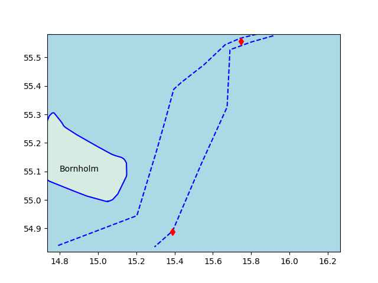

Week 24
IEEE Spectrum: "[S]cientists have found that adding grooves to PEM fuel cells can improve the performance of these devices by up to 50 percent compared with state-of-the-art conventional electrodes under standard operating conditions... By separating proton and oxygen flow along grooves and ridges, the new electrodes help improve the transport of both"

Peter Clough: "Our research shows that blue hydrogen – which is produced using natural gas with emissions captured and stored – could presently be sold for £1.90 to £2.80 per kilogram, with nearly complete carbon capture"
Upstream: "Huge hydrogen demand prompts China to build pipeline network from wind and solar energy-rich regions"
The Federation is not U.S. Europe is the Federation. U.S. is the Pakled. #TNG
Which culture does the Borg represent? The Soviets? Nazi Germans? Actually the Borg is every culture. Every culture assimilates. Every culture is a tomato soup (not a melting pot); people are added into it but the taste of tomato never goes away. #TNG
Al-Monitor: "Saudi Arabia bans new Spider-Man movie that features transgender flag"
Tsk tsk tsk.. You went woke then broke
"The former number-one beer seller in the United States is no longer Bud Light after it was surpassed in sales by Modelo Especial"
"[Anheiser Busch] Marketing executives had hoped the partnership with [a] transgender influencer would freshen up Bud Light's image - but instead, it very nearly destroyed it, with celebrities and customers slamming the company for going 'woke'"
"@Vigdisol@snabelen.no
#sintef #ntnu #KyushuUniversity and our industry partners have successfully secured funding for the HyLINE II project! By closely studying how #hydrogen interacts with #pipeline material, our project aims to overcome critical challenges and unlock opportunities for enhanced performance, efficiency, and safety for hydrogen gas transport in both existing and new pipelines"

The Japan Times: "Despite lofty hopes for a 'nuke-free world,' global spending on nuclear weapons continued to surge in 2022, with the world’s nine nuclear states continuing to modernize and expand their arsenals. The alarming development — the third year in a row that spending has risen - .. highlights a worsening global security environment"
37:00 a migrant's children.. how much of their "heritage" do they retain? There's the answer.
The father is French; by no means of a marginal, a non-distinctive, unknown culture.
There is a way to produce tom. sauce that can last for months without preservatives. Good to know.
#Manu #Bouris
Supreme Beings Of Leisure - Under The Gun #music
H2 Central: "Inter-American Development Bank, IDB Approves $400 Million Loan to Develop Chile Green Hydrogen Industry"
H2 Central: "Vortex Energy identifies at least two salt structures suitable for hydrogen storage... This significant discovery is expected to play a pivotal role in advancing the hydrogen economy, providing a viable and sustainable solution for energy storage and transportation"
"@moorsevnews@masto.ai
Polish company PESA has developed the world's first hydrogen locomotive, the Hydrail! Powered by hydrogen, this train can travel up to 1,000 km on a single tank! It's a major step forward in transportation and a cleaner alternative to traditional fuels.
Key features:
Top speed: 160 km/h
Capacity: Up to 300 passengers
Expected fuel efficiency: 30% higher than diesel trains"

H2 Central: "Uruguay Plans $4 Billion Green Hydrogen Facility Investment"
Tootle, Tooty, Tooter - great names (Mastodon clients)
H2 Central: "Iberdrola, a world leader in green energy, and Trammo, the world largest seaborne trader of anhydrous ammonia, have signed the largest green ammonia framework agreement in Europe to date for the purchase and sale of up to 100,000 tons of green ammonia per year from 2026. The contract will enable Iberdrola to construct the first green ammonia plant in southern Europe, which will be viable thanks to European funding, and involves a total investment of 750 million euros"
#AppleVisionPro
Torquecafe: "Why Toyota’s hydrogen LMP is a big deal.. Lost amid the excitement of Ferrari’s comeback Le Mans 24-hour win was a very important car reveal from Toyota. The Japanese brand took the wraps off the ‘GR H2 Racing Concept’ ahead of the race and it could be the most important car the company makes in the next decade. Why is it so important? Because the GR H2 is the latest attempt from the automotive giant to make carbon neutral hydrogen fuel a realistic alternative to petroleum and diesel"
The observation on the "last-chance" talk is interesting
Is the US Sleepwalking into War?
"French President Emmanuel Macron has asked South African President Cyril Ramaphosa for an invitation to the upcoming BRICS summit in Pretoria, French newspaper L’Opinion reported on Monday"
J S T A R S - Tripping The Light Fantastic #music
One plus point for J. McCain, he was against the Citizens United SCOTUS decision. Doesn't absolve him of the Iraq War, and if he were alive he'd be all over this Ukraine bullshit, but still, good for him.
It is hilarious to me when it became apparent the obscenely free market system was breaking down the first organized protest against it came from people wanting even more capitalism - this was the Tea Party movement right? They argued capitalism was being done wrong, a purer form of it, more of it was needed. From the left Occupy Wall Street arrived later, 2011. It should have been first.
Watched Americonned. Some people have it rough.. The system works against them. It outlines the rise of neolib movement well..
CNBC: "Fed holds off on rate hike, but says two more are coming later this year"
CPI YoY change (inflation) is down compared to previous month
2023-04-01 4.930320
2023-05-01 4.047609
Al-Monitor: "Palestinian president Mahmud Abbas will make a state visit to China next week, Beijing said Friday, after China expressed readiness to help facilitate Israeli-Palestinian peace talks"
#RogerWaters #Israel
Concentration in the ad market is a problem. I'm glad the EU looking at this.
WION: "EU’s new antitrust charges to strike Google’s most successful ads model"
Serbians are on the rise in sports aren't they.. Djokovic on tennis, now Jokic for Denver Nuggets. Ivan make basket
Ukraine makes sense from "Cui Bono?" angle. UA as culprit is as likely as US being one. Let's call this the B Scenario. Good journalism by European press, ARD, die Zeit, SWR.
lat,lon = geo['nsleak1']
u.elev_at(lat,lon)
Out[1]: -76
lat,lon = geo['nsleak2']
u.elev_at(lat,lon)
Out[1]: -73
Those are reachable depths (in meters).. a good diver could do it
AFAIK the two NS damage locations are below, near the island Bornholm.
geo = u.sm_plot_ukr5()

UA had the capability? I guess expert divers could reach 80-90 meters in depth..
Tagesschau: "The Dutch military intelligence service MIVD apparently received the first indications of a possible attack by a commando from Ukraine. The Dutch had therefore become aware of an attack plan on the Nord Stream 1 pipeline. According to the MIVD, the attack should take place as early as June 2022, using a rented boat [and divers]
The Dutch.. initially shared their findings with the USA and then also warned various European countries, including Germany, of the possible attack. Based on this report, the CIA is said to have warned the Ukrainian secret service against putting such a plan into action"
The advance around Blahodatne looks good for UA. There are some other gains visible but the one around Orikhiv cost dearly.. There is a spot in the area called "Bradley Square" after all the Bradley (and Leopard) tanks that were destroyed there.
How is the Ukranian counter-offensive going? Comparing the advance of past three weeks,
geo = [['Main'],['Orikhiv','Malaya Tokmachka','Robotyne'],['Zaporizhzhya NPP'],
['Avdiivka'],['Vuhledar','Velyka Novosilka'],['Khromove','Bakhmut'],
['Kherson'],['Blahodatne'],['Lobkove']]
u.sm_plot_ukr4('ukrdata/fl-0613.csv','ukrdata/fl-0521.csv',geo,3,3,zoom=0.03)
H2 Central: "China Expected to be World’s Largest Importer of Clean Hydrogen, Deloitte Says as it Urges World to Scale up Production Capacity by 2050"
H2 Central: "Norway and Northern Germany State Agree on Blue Hydrogen Supplies to Scale up Industry – CEW"
H2 Central: "Hyundai Motor Co., along with South Korean Ministry of Environment, the Seoul Metropolitan Government, SK E&S and Tmap Mobility, signed a MOU for making Seoul as a leading city in hydrogen mobility, aiming to convert Seoul’s city buses, airport buses and commuter buses into hydrogen ones"
The Register: "Meta confirms decentralized Twitter rival in the works.. Not content to sit on the sidelines while Twitter falters, Facebook parent Meta is working on a text-focused competitor, based on the decentralized bones of fediverse favorite Mastodon. Reportedly dubbed 'P92' internally, the app may well interoperate with Mastodon by supporting the ActivityPub protocol"
"@msquebanh@mastodon.sdf.org
#Hydrogen was in the news last week when the #BCgovernment announced an agreement with the Japanese #OrganizationForMetalsAndEnergy Security, which paves the way for British Columbia to export new sources of low carbon energy.
That announcement came 3 days after the #McLeodLake #IndianBand & #MitsubishiPower announced they were working together to develop a $5 billion hydrogen plant on the Kerry Lake East reserve, 80 km north of Prince George"
JAEA: "[22/09] The Government of the UK has identified High Temperature Gas-cooled Reactors (HTGR) as the most promising candidate for the use of nuclear energy for the decarbonization. The UK plans to promote the Advanced Modular Reactor Research, Development and Demonstration.. programme leading to the demonstration of HTGR by the early 2030's.. In Japan, the Government has declared that it will pursue technological development of hydrogen production using HTGR as one of the focus areas in order to achieve carbon neutrality by 2050"
That sounds like they played dumb better, that's all
AP: "It appears both [Biden and Pence] turned over the records quickly, without intent to conceal. That’s important because the Justice Department historically looks for willfulness, or an intent to mishandle government secrets, in deciding whether to bring criminal charges"
CNBC: "New York overtakes Hong Kong as the most expensive city in the world for expats, new survey shows"
A comparable plane using batteries is a laughable concept, it would have sub-turtle speed and crash 10 minutes after take off.
CNN: "Frankfurt to Dubai in 90 minutes? Europe enters the hypersonic plane race.. a European hypersonic startup is having a go, promising enticing journey times such as Frankfurt to Sydney in 4 hours 15, or Memphis to Dubai in 3 hours 30.
The Destinus concept is hydrogen-powered flight at five times the speed of sound, cutting flight duration to less than a quarter of current commercial air travel"
Both sides during TR election had nationalist parties in their respective coalitions, such vote was a minor factor. Some nat guy won 5% in the first round but a famous leftist (in jail) could've had 10% while "Mr. Kemal" Bay Kemal lost doing this bizness didn't he?
{kind=link}
H2 Central: "Clean-seas Has Announced a West Virginia Manufacturing Facility to Convert Plastic Feedstock to Clean Fuels Products, Including Hydrogen"
Reuters: "US SEC crackdown on Coinbase, Binance puts crypto exchanges on notice'
Lychee looks tasty, Chinese plums..? Gotta get me some lychee
WION: "Millionaire fined a record $130,000 for speeding in Finland, where penalties are based on income"
"@r000t@fosstodon.org
Gonna make a montage of all the reporters and outlets who shamed Google Glass for privacy reasons, that are now singing Apple's praises for making essentially the same product"
Politico: "Images are appearing online that allegedly show destroyed Ukrainian tanks that presumably were taking part in the just-launched counteroffensive... the images indicate that a mechanized war won’t be all that easy for Ukraine and the Russians, for the moment, are having some success repelling the counteroffensive"
The Guardian: "China reportedly reaches secret deal with Cuba to host spy base on island"